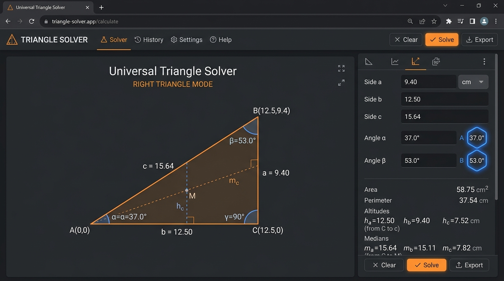

Whether setting up a sine bar for a tapered fixture or calculating toolpath offset coordinates for angular profiles, triangle geometry is the bedrock of precision engineering.
On the machine shop floor, technical blueprints rarely provide every single coordinate directly. Machinists frequently encounter non-right-angled cuts, compound bevels, dovetail slide angles, and bolt-hole spacing offsets where only two sides and an angle (SAS), or three sides (SSS), are specified.
Understanding how to solve right and oblique triangles using the Law of Sines, the Law of Cosines, and altitude projections ensures you can verify dimensions at the machine controller without waiting for a CAM revision.

1. Fundamental Triangle Solving Theorems
A triangle is fully determined when you know any 3 independent parameters (with at least one parameter being a side length). The two primary laws governing all planar triangles are:
Law of Cosines (SSS & SAS)
Used when you know all three sides (SSS) or two sides and the included angle (SAS):
Angle derivation: cos(C) = (a² + b² - c²) / (2ab)
Law of Sines (AAS, ASA & SSA)
Relates each side length to the sine of its opposite interior angle:
Essential for determining unknown side lengths once angles are known.

2. Perpendicular Altitude, Median & Segment Splits
In manufacturing, finding the perpendicular drop height (altitude) from a vertex to the base is critical for depth-of-cut calculations and fixture clamping heights:
Formulas for Triangle Auxiliaries
- Semi-Perimeter (s):
s = (a + b + c) / 2 - Heron's Area Formula:
Area = √[s • (s - a) • (s - b) • (s - c)] - Perpendicular Altitude (h_c):
h_c = (2 • Area) / c - Median to Base (m_c):
m_c = 0.5 • √[2a² + 2b² - c²] - Base Segments (p, q):
p = (b² + c² - a²) / (2c), andq = c - p
3. Practical CNC Shop Floor Applications
A. Sine Bar Height Setup
A sine bar creates precision inspection angles using gauge block stacks. The setup forms a right triangle where the sine bar roll center distance is hypotenuse c (usually 5.000" or 100mm) and the block stack is side a:
B. Taper Angle & Length Calculations
When machining a morse taper or machine spindle taper, the big diameter D, small diameter d, and taper length L form a right triangle with half-angle α:
Solve Triangles Online for Free
Use our interactive client-side Universal Triangle Solver with live canvas visualization, altitude toggle, and unit support.